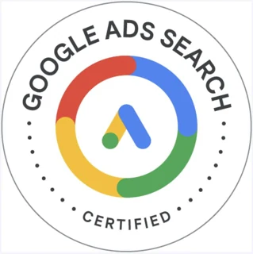

01WEEKS 1–4
Give a business
a place to start.
Understand the customer. Shape the message. Build a WordPress website or landing page with a clear next step.
WHAT YOU’LL HAVEA brand strategy + a website or landing page.
AI POWERED DIGITAL MARKETING · LIVE ONLINE
Explore how we teach, the three projects you’ll build, and what your fee includes. Join a free Live Session to get your questions answered before you decide to enroll.
Illustration of the three course projects.
Build with the tools
marketers actually use.
LESS GUESSING. A CLEARER NEXT STEP.
A course should make sense to you before you pay for it.
See how the lessons connect to practical work. Ask about the schedule, projects and support. Leave the Live Session with a clearer picture of what comes next.
BRING YOUR QUESTIONS
See how the course builds from the fundamentals.
Explore the three projects and what goes into each one.
Discuss the learning path, practice time and career support.
THE LEARNING, IN THEIR WORDS
Clearer campaigns. Stronger project work. Hear what learners took away from the course.
YOUR PORTFOLIO STARTS HERE
Three connected projects turn the lessons into something you can open, explain and improve.
Understand the customer. Shape the message. Build a WordPress website or landing page with a clear next step.
Find what your audience searches for. Create useful content. Plan a month of posts around a real marketing goal.
Connect ads, tracking and follow-up. Understand what happens after a click—and how to measure the work.
Build it. Practise explaining it. Take it to your interviews.
IS THIS YOUR NEXT STEP?
You don’t need a marketing background. If you’re ready to change careers, build new skills or take a step that makes your parents proud, you’re in the right place. Bring your willingness to learn. We’ll guide you, one step at a time.
Studying or recently graduated? Build practical work you can talk about in interviews.
Changing careers or adding a skill? Follow a clear route from the basics to a complete campaign.
Exploring freelance work or business growth? Learn how the parts of digital marketing work together.
Entry requirement: Class 12/Intermediate completion. If you already have advanced specialist skills, compare the syllabus with what you want to learn next.THE TOOLS ARE ONLY THE START.
Who is this for? What should they do next? How will you know it worked? Learn to ask the questions that give your marketing direction.
YOUR 12-WEEK LEARNING PATH
Start with the customer. Build the website. Create the content. Connect campaigns, measurement and follow-up.
Each stage adds to your project work, so you can see how the pieces fit.
AI + DIGITAL MARKETING TOOLS
Use AI to help research, draft and create. Learn to check the output and make the marketing decision yourself.
tools & extensions covered.
From your first research question to your campaign report.
EXPERIENCE YOU CAN ASK QUESTIONS ABOUT
Get feedback on your projects, discuss campaign decisions and ask the questions that come up when you practise.
Trainer’s professional track record.

100% PLACEMENT ASSISTANCE
Our hiring team supports your next step with practical preparation for your applications and interviews.
Organise your projects into a portfolio that shows how you think and what you can do.
Prepare your resume and practise explaining your choices in mock interviews.
Apply your learning through a three-month supervised internship. Individual arrangements vary.
Placement assistance supports your applications; hiring decisions depend on the employer and role.
THE PROGRAMME. THE PRICE. THE DETAILS.
Live teaching, guided practice and three projects. Explore the course before you enroll.
YOUR COMPLETE 12-WEEK PROGRAMME
Excluding GST. Confirm the final payable amount before payment.
See the learning. Ask your questions. Then decide.
When offered, pay 50% first and the rest within one month of your first payment.
A 14-day refund request window.
Full refund requests made within 14 days of payment are processed within 48 hours.
HERE’S WHAT’S INCLUDED
Tool coverage does not automatically include an individual paid subscription. Confirm tool access, taxes and payment terms before enrolling.
LET’S CLEAR A FEW THINGS UP
From your first class to your final project, here are the practical details.
YOUR FREE LIVE SESSION
You don’t have to decide everything today. See the course, understand the projects and find out if it fits your plans.
Our team will confirm the next available session date, time and joining details.
Free to explore. No pressure to enroll.